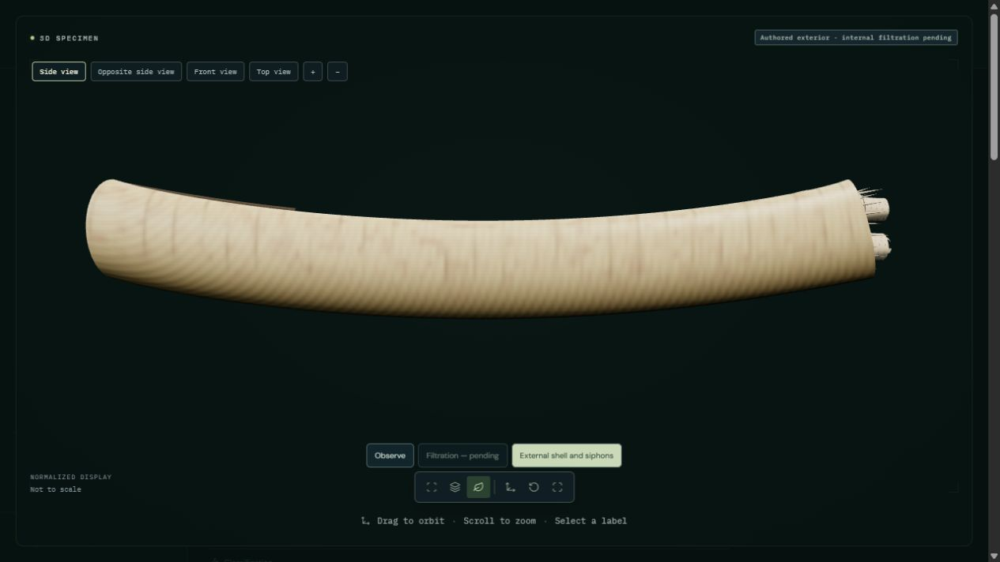

Open sword razor shell | Previous Manila clam study
Inspect a small valve opening about an anterior dorsal axis and extension of the short posterior siphonal collar. Separate distal passages remain open. This eight-second presentation ends in a held inspection pose; it does not reproduce a measured natural cycle.
Authored, unmeasured external reconstruction. Foot, fourth pallial aperture, hinge teeth, gills, muscles, capture, sorting, ingestion, digestion and natural burial are not reconstructed. Soft tissue is an undifferentiated enclosure, not modeled organs. Cirrus counts, pigment, timing and ligament mechanics are illustrative; photorealism and physiological accuracy are not established.

Holme (1951): The identification of British species of the genus Ensis Schumacher. Text on pages639–643 supports curved equivalve shells and anterior pedal versus posterior siphonal ends. Figures were not accessible; no dimensions or timing were fitted.
Amgueddfa Cymru / Museum Wales: Ensis ensis collection specimen. Actual collection photograph inspected for curved parallel margins, anterior rounding, posterior obliquity and anterior external ligament. Pixels are not used as a texture.
Deshayes (1844–1848) live-animal drawing, reproduced by DORIS. Inspected drawing guides short posterior siphons and differentiated marginal projections qualitatively. The visible figure number and host caption disagree; taxonomic identification, cirrus counts and dimensions are not independently resolved.
Owen (1959): Observations on the Solenacea with reasons for excluding the family Glaucomyidae. The Ensis section supports posterior mantle-fold fusion and reports a fourth pallial aperture. Full paper was not accessible. That aperture, hinge teeth and internal organs are not reconstructed; Glauconome anatomy is not transferred to Ensis.
Existing source photographs, attribution and licenses are preserved. Animation changes parent transforms, not vertex arrays or UVs. A qualitative mantle enclosure prevents an empty-shell appearance; it is not a reconstruction of internal organs.
45 animal processes remain fully pending, including this species’ filtration. This exterior correction does not reduce that count.